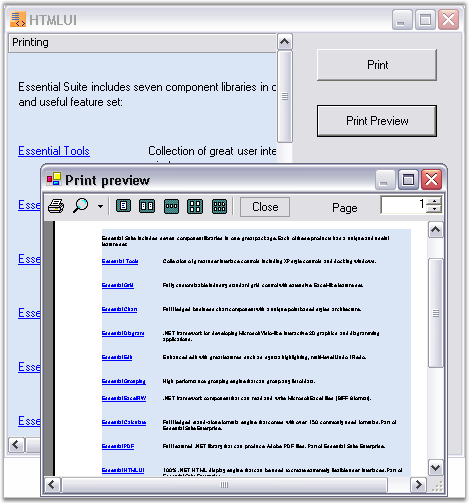

The HTMLUI control supports printing that helps the user in developing a hard copy of the document displayed in the HTMLUI control. Also the Print Preview feature lets the user to preview the page before being printed, and change the page according to the requirements.
|
[C#]
//Document initialization HTMLUIPrintDocument pd = new HTMLUIPrintDocument(this.htmluiControl1.Document);
//Print Preview PrintPreviewDialog dlg = new PrintPreviewDialog(); dlg.Document = pd; dlg.ShowDialog();
PrintDialog dg = new PrintDialog(); dg.AllowSomePages = true; dg.Document = pd; if (dg.ShowDialog() == DialogResult.OK) pd.Print(); |
|
[VB.NET]
'Document initialization Dim pd As New HTMLUIPrintDocument(Me.HtmluiControl1.Document)
'Print Preview Dim dlg As New PrintPreviewDialog() dlg.Document = pd dlg.ShowDialog()
Dim dg As New PrintDialog() dg.AllowSomePages = True dg.Document = pd If dg.ShowDialog() = DialogResult.OK Then pd.Print() End If |
Along with printing feature, HTMLUI control supports previewing of the document before printing. This following code snippet shows how the print preview feature is enabled in HTMLUI.
|
[C#]
// Document Initialization private void PrintPreViewButton_Click(object sender, System.EventArgs e) { HTMLUIPrintDocument pd = new HTMLUIPrintDocument(this.htmluiControl1.Document);
// Initialize the new instance of the System.Window.Forms.PrintPreviewDialog Class PrintPreviewDialog dlg = new PrintPreviewDialog() ; dlg.Document = pd; dlg.ShowDialog(); } |
|
[VB.NET]
' Document Initialization Private Sub PrintPreViewButton_Click(ByVal sender As Object, ByVal e As System.EventArgs) Dim pd As HTMLUIPrintDocument = New HTMLUIPrintDocument(Me.htmluiControl1.Document)
' Initialize the new instance of the System.Window.Forms.PrintPreviewDialog Class Dim dlg As PrintPreviewDialog = New PrintPreviewDialog() dlg.Document = pd dlg.ShowDialog() End Sub |
The following figure shows the Print preview page that appears when the corresponding button is clicked. This illustrates the Printing feature in HTMLUI.

Figure 49: Printing support in the HTMLUI Control
 HTMLUIPrinting
Sample
HTMLUIPrinting
Sample